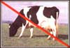
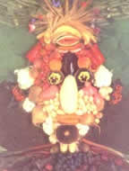
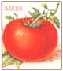
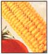
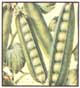
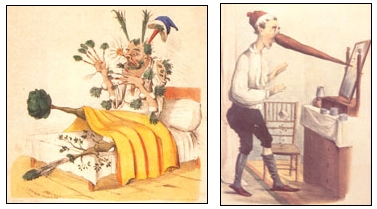
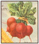

I'VE always tried to be good. As a kid, I made my bed whenever possible. Later I joined the Peace Corps-mostly for the adventure, I hate to admit. Now I do green things. I separate my garbage, grow a garden without pesticides, drive a fuel-efficient car. Trendy, but still not wholly satisfying.
OUR times cry out for a larger response, an enterprise that matches the magnitude of the environmental emergency. Something in me envies Mother Teresa. She knows how to respond. I listen to Eastern Europeans, hoping to discover the secret of their recent miracles. "The salvation of this human world lies nowhere else than in ... human responsibility," Vaclav Havel, new president of Czechoslovakia, tells the U.S. Congress. "We are still incapable of understanding that the only genuine backbone of our actions, if they are to be moral, is responsibility." Polish poet Czeslaw Milosz, winner of the 198o Nobel Prize in literature, writes in Granta: "What remains today is the idea of responsibility, which works against the loneliness and indifference of an individual living in the belly of a whale." I am left with a quest: What is the link between the environmental catastrophe and personal responsibility?
Try being a vegetarian, suggests my neighbor, who later drops off Ellen Buchman Ewald's Recipes for a Small Planet, first published in 1973. It turns out my neighbor is a "beady eyed" vegetarian, her own description. She is perfectly willing to eat the flesh of fish and chicken, who have beady eyes, according to her, but not that of cuddly creatures with big brown eyes-not pandas, obviously, and not bears and pigs and sheep and certainly not Bessie and Bambi. Highly sentimental, I think to myself, and not much of a sacrifice, certainly not for someone who lives in Ralph Lauren country, where the calories count and the wine is white. She would appear perfectly normal in those circles. Her path is not exactly mine. So my search continues.
Try vegetarianism, insists my student, handing me a dog-eared copy of Peter Singer's Animal Liberation, also first published in the early '70s and reissued this year with a lavish publicity campaign. Needless to say, she supports the animal-rights movement, and her advice is essentially ideologicalthat is, anchored in a new ethic for the treatment of animals. The vegetables 'in this kind of vegetarianism are beside the point, for they serve chiefly as an alternative to the killing and eating of animals. As one who has whispered sweet nothings to plants and seen them grow healthy and strong in response, I have come to doubt the moral superiority of cows over cowpeas.
The ideology of this rapidly growing movement still implies an evolutionary hierarchy, with the human species in the penthouse, the animal kingdom in the middle and the botanical world in the basement. It seems to me this value-loaded stratification Turn the previous page upside down for face two, Is the steer (right) really "superior" to a tomato? is equally useful to those who enjoy eating meat. "Let's eat the losers, say modem Darwinists in pinstripes as they happily head toward a power lunch at a fancy steakhouse. They want it allthe meat and the potatoes-and make no bones about it. I admire their relentless consistency; it's just their environmental sensitivities that leave me hungering for something else.
Try eating vegetables, says my wife, whose interests include saving money on food and keeping me fit for work. She gives me a book also: The Vegetarian Epicure, by Anna Thomas, which first appeared 'in 1972 and is still available. Eating more vegetables and less meat speaks to my frugal soul. Dan Rather never says, "Romanian peasants are tightening belts tills winter; some have only steaks for dinner and won't see a cabbage for months." When peasants are in trouble, they get vegetables, not beef Lack of meat, wrote anthropologist Marvin Harris, poses a direct revolutionary threat to totalitarian regimes. In 1981, for example, the Polish government called for a 20% cut in meat rations and then had to declare martial law to restore order. Since I share some of the peasant's worldview but live in affluence, I have to save up for the tough winters ahead; and moving toward the vegetable end of the spectrum looks like a good way to take responsibility for the environmental consequences of my actions. But I also know that an intense craving for meat can suddenly strike-and, in my case, be swiftly satisfied.
In 1983, 1 was invited to join a small group that meets for a week every year to discuss organizational change. Our meetings take place at a famous health-and self spa south of Big Sur, California. Sometimes the founder of the institution joins our discussions. The 1983 session, my first, went well, but by the end of the week my body was in full revolt against the regime of sprouts and lettuce. So was the founder's. We formed a secret, carnivorous alliance to find hamburgers. Late that night, while a Pacific storm hurled rain, fog and angry waves at the mountains that plunge into the ocean, we slipped out the back door, tiptoed to his car and sped off to negotiate the dark, slippery hairpins on the coastal highway. Around midnight, after skirting landslides and other dangers, we found our meat. The pleasure lingers.
Nevertheless, it doesn't take much to convince me that a diet laden with fruits, nuts, seeds, grains, legumes and other fresh vegetables will keep my heart healthier, weight lower, spirits higher, steps bouncier and sex life friskier.
In mulling over these old books, I suddenly remembered their common inspirationthe seminal Diet for a Small Planet by Frances Moore Lappe, which first attracted attention in 1971 and has since sold over 3 million copies. I picked up my old copy again and began to read. It soon dawned on me that her message-changing one's diet helps prevent mass hunger and environmental disaster-had only become more significant and relevant in the intervening years. My quest came to a close. I now know how to be good in the '90s.
The secret lies in accepting the broad environmental framework that Lappe constructed to support vegetarianism. It works today. All it needs is a little rehabilitation and polishing. Lappe saw the crisis long before ozone bole and greenhouse effect had become household words. She analyzed the inherent waste and destructiveness of a meat-eating world. When I eat meat, according to Lappe's vision, I'm eating the environment.
"Our daily choices about food connect us to a worldwide economic system," Lappe' said in 1987. "Even an apparently small change-consciously choosing a diet that is good both for our bodies and for the earthcan lead to a series of choices that transform our whole lives." From this perspective, vegetarianism is far more than just a flaky remnant of the '70sit's the key to conservation, and to a sense of personal responsibility for the environment. Do we genuinely want to make a difference? The hard facts indicate the kind of impact we can make with a dietary change. And that impact is profound.
CONSIDER, for example, water. More than half of U.S. water consumption goes to raising beef It takes 25 gallons to produce a pound of wheat, but 2,500 for a pound of meat. In one day, the diet for a meat eater requires 4,000 gallons of water; for a true vegetarian, only 300. That contrast amounts to real conservation. It also means fewer dams and more water left in streams for beady-eyed fish.
Some 90% of the water pollution that results from organic wastes is attributed to livestock. The inorganic residues of pesticides are also overwhelmingly caused by meat production (55%) and dairy operations (23%). For example, American corn production, which is predominantly oriented toward the feeding of livestock, uses 30 million pounds of toxic chemicals annually to control the corn borer. Only 11% of combined pesticide residuals come from the growing of vegetables, fruits and grains. And even that small percentage should decline as organic gardening and agriculture continue to spread.
Consider greenhouse gases-those carbon dioxides and methanes that trap escaping heat and raise the earth's temperature. Many experts say the accumulation of greenhouse gases in the upper atmosphere could lead, in two short generations, to a global warming that will have catastrophic effects-expanding deserts, flooded coastal areas, loss of species and genetic diversity and massive dislocations in agriculture.
Combustion of fossil fuels releases carbon dioxide and contributes heavily to the greenhouse effect, yet the fossil-fuel energy to produce one pound of feedlot beef would grow 40 pounds of soybeans, the chief ingredient in tofu delights and hamburger extenders. (A mixed blessing, I must admit. Whenever my wife goes on a "cleansing diet," I become submerged in such soybean concoctions. Sometimes my willpower is weak. In early March, during a cleansing episode, I sneaked out one night to get a juicy porterhouse at a nearby restaurant.) If all earthlings were meat eaters, global petroleum reserves would disappear by the year 2003; if vegetarians, by 2250. That gap constitutes a big cushion of security-long enough to develop alternative sources of energy and modes of transport. National security would also be cushioned: If only 10% of my fellow Americans stopped eating meat, oil imports would no longer be necessary.
Major sources of methane are the digestive tracts of higher mammals, including those raised for food. By reducing their numbers, we therefore decrease the habitat for methane-producing organisms. In the United States alone, livestock animals manufacture a full 250,000 pounds of manure every second.
In looking further into the environmental argument for vegetarianism, I was drawn to the tragedy of tropical rain forests, which are being cut and burned at a staggering rate. Here again, I quickly discovered, the eating of meat is a crucial element. Much of the clearing is done to -create ephemeral pastures for animals that end up on North American dinner plates. A couple of years ago, Burger King stopped using rain forest beef; consumer pressure played at least a partial role in its decision. Labor is cheap and land is even cheaper. Profits are almost unavoidable. Tropical soils are thin, however, and the new grazing lands are soon depleted, forcing a migration deeper into virgin stands of forest. Abandoned pastures erode and become virtual deserts, watersheds become mudsheds and hydroelectric reservoirs become silted and useless. In the end, after suffering deforestation, floods and malnutrition in order to grow filet mignon, the people of Costa Rica, for example, eat less meat than does the average North American house cat. Central American countries, meanwhile, export 200 million pounds of meat annually.
Back in the United States, more than half of all agricultural lands are used to raise beef, an allocation that carries serious cost implications. Furthermore, it takes 16 pounds of grain and soybeans to produce one pound of feedlot beef, five pounds of protein must be fed to chickens to produce one pound of chicken protein, and almost eight pounds to hogs for one pound of pork protein. When grain is fed to livestock, most of its protein (90%), carbohydrates (100%) and dietary fiber (100%) is wasted. An acre of land-my backyardcan produce 20,000 pounds of potatoes but only 165 pounds of beef, approximately 20 pure vegetarians can be fed on the amount of land needed to feed a single meat eater.
I must admit that a desire for a better environment and good nutrition for all humankind are only part of the attraction. If truth be told, I envy Mother Teresa's long life as much as I admire her good works. And a meat-free diet, I have learned on this journey, may even prolong life. Certainly Frances Moore Lappe's book argues that point, and research conducted by Seventh Day Adventists (vegetarians themselves) at the Loma Linda University Medical Center in California, supports it as well.
MARVIN Harris, on the other hand, contends that "while plant foods can sustain life, access to animal foods bestows health and well-being above and beyond mere survival." That's food for thought, but we may have, *in fact, already despoiled our planetary habitat to the degree that "mere survival" is the appropriate level at which to begin again. Dr. Murray E. Jarvik, inventor of the artificial heart, writes, "The moral is clear: Despite the fact that our ancestors loved meat and that we do, too, it carries with it the danger of heart disease."
In the end, as Havel and Milosz 'insist, it all boils down to a sense of personal responsibility. Perhaps responsibility for the health of the global environment begins with responsibility for personal health. The rates for cancer, for example, are indicators of widespread failure of personal and social responsibility. Need I emphasize that they are alarmingly high among meat, dairy and egg eaters? The strong correlation between meat consumption and colon cancer is well-known, and breast cancer is four times higher for women who eat meat daily than for those who consume it less than once a week. Cases of fatal prostate cancer are three and a half times greater among men who eat meat, eggs and dairy foods daily than among those who rarely eat such products. Such are the wages of environmental sin.
In rejecting vegetarianism out of hand, many may be following a high-speed highway to personal and global destruction. In reinforcing the new diseases of affluence, we are eating our very lives. At the beginning of this search I was trying to be good. Now I'm also trying to be well-and responsible. What really intrigues me is that a good part of the solution to our global ills may lie in our dear old vegetable patch. I think I will try whispering more than sweet nothings to the broccoli this morning.
Douglass Lea, a.k.a. Dr. Viggie Legume, is a gardener and writer. He reaches at American University in Washington,D.C
ALL SEED PACKETS ©W. ATLEE BURPEE & CO.
|
 Anti-vegetarian cartoon (19th century) held a warning. Another satiric cartoon depicts the wages of taking too many vegetable compound pills. |
 |
 |
|
 |
 |
 |
|
 |
|
|